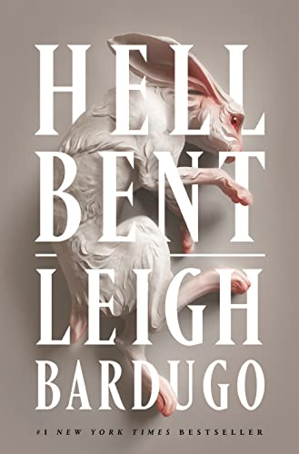
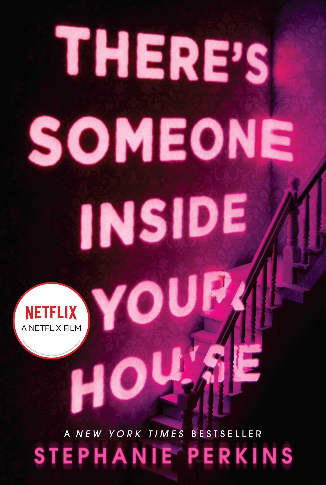
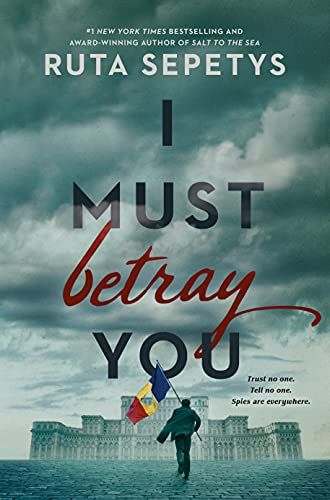
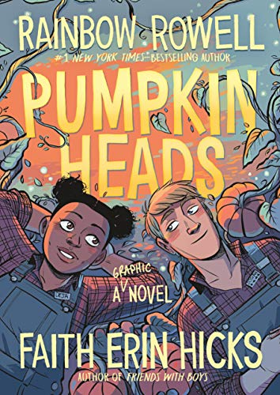
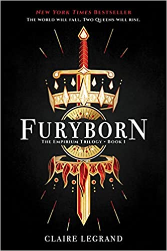

|
Home YA Reviews Why YA Resources |
Hell Bent by Leigh Bardugo
 3 Stars--This is like cheesecake. The water bath didn’t work and it got a crack, destroying the smoothness on top. It's still a good cheesecake, but not perfect. Fans of dark academia will appreciate this death defying book. This book is the second book in the Alex Stern series. The first book in the series is called Ninth House which was released on October 9, 2019. The third book in the series has not been announced yet. If you are a person that likes to read their books pretty quickly after each other, I would wait a few more years before picking up this series. This seriers has a lot of potentional to be amazing, becuae Leigh Bardugo is a great writer; the time frame for the series is too much.
There's Someone Inside Your House by Stephanie Perkins
 2 Stars--Stephanie Perkins needs to stay in her genre. She writes romances so easy is like eating cake. This is gruesome and not because it’s supposed to be a slasher horror. It’s gruesome at how slow and yet fast the plot was. Makani had such amazing potential for a good backstory. It was there through the majority of the book as she feels she’s been stained by a past experience. Her relationship with Ollie was cute. I liked them together. That is a story that needs a book. The relationship Makani ends up having with her grandma is so beautiful. Also Makani talks and talks about how her parents are garbage, but their role is the size of a sewing needle. A waste. If the book wasn’t about a killer, maybe we could’ve read about how terrible they are and how that would put a strain on her relationship with Ollie. Now that would’ve made sense. This book did not.
I Must Betray You by Ruta Sepetys--from Frappes and Fiction
 "Ruta Sepetys has been one of my favorite authors since I began reading her books in 2020. I love how she writes about “hidden history,” how her books appeal to both teens and adults, and how every time I read one, I come away feeling like there are so many gaps in my knowledge of history that it’s pretty much unfathomable. I believe history is one of the most important subjects to study, because, as they say “history doesn’t repeat itself, but it does rhyme.” Humanity really never seems to get over its classic pitfalls, and it’s vital that we are aware of history so that we are able to learn from past mistakes and, you know, not make them again. There are so many things that I can’t believe that we don’t learn about in school here in the US." Check more reviews from Frappes and Fiction!
Pumpkinheads by Rainbow Rowell (author), Faith Erin Hicks (illustrator), Sara Stern (Contributor)
 5 Stars--This review has some spoilers!! This book is literally absolutely so wholesome. I’ve had this book ever since it came out, and I’ve been waiting and waiting to read it for the perfect moment. Well I got too busy. Now, I’m going to read it and this has made my heart so happy. I knew they were going to get together at the end. I knew it, because of the way he looks at her on the cover, and Rainbow Rowell has a hand in it. I love both of them.
Furyborn by Claire Legrand
 4 Stars--Legrand captures traveling between a 1000 year difference incredibly well. The first chapter she basically lays down a big plot but it just makes you want to read more. I did not like Eliana at all for a good portion of the book. I found her to be whiny and “woe is me” at the most obnoxious time. Overtime I grew to like her character, but I hope I like her more in the next book. I did like Rielle an incredible amount. The situations she is placed into by people of authority could be the very reason why she makes the terrible decision at the beginning of the book. I really enjoyed that the main characters seem morally grey. I liked the trials that Rielle went through and how evil they were for her to experience. I liked the growth that Eliana experiences by the end of the book. I still have a couple of questions for the series that I hope are answered by the end of the book. |
| opyright © 2023--Page Turning Reads | |